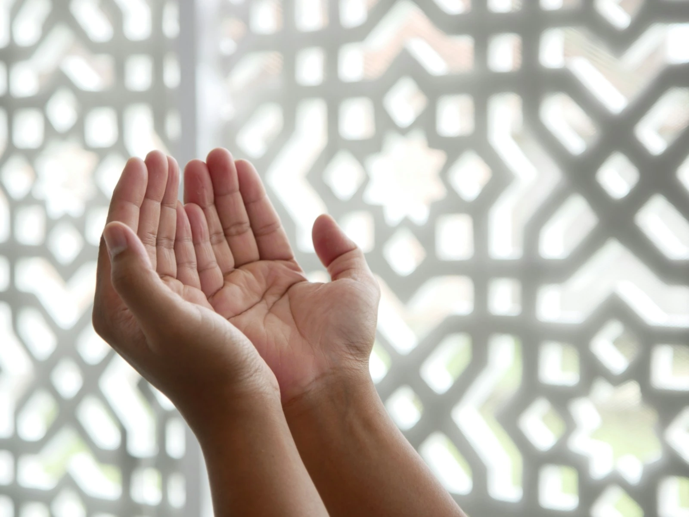

Find support
Whatever you are facing, you do not have to face it alone. Speak with the Imam and the office here at the masjid — and use the Islamic Council of Victoria’s free Ask ICV service finder to reach Muslim-specific and mainstream support services across Victoria.
Photo: Masjid MABA / Unsplash
Ask ICV · Islamic Council of Victoria
Find help by topic
Ask ICV is a free service finder run by the Islamic Council of Victoria. Choose the kind of help you need to see Muslim-specific and mainstream services across Victoria. Each link opens Ask ICV.
Emergency & crisis support
Browse on Ask ICVFinancial support
Browse on Ask ICVHealth services
Browse on Ask ICVMental health & counselling
Browse on Ask ICVFamily & domestic
Browse on Ask ICVYouth & education
Browse on Ask ICVEmployment & skills
Browse on Ask ICVLegal aid
Browse on Ask ICVNew Muslim / convert support
Browse on Ask ICVCommunity & belonging
Browse on Ask ICVDisability & aged support
Browse on Ask ICVReligious & spiritual life
Browse on Ask ICVRefugee & new migrant support
Browse on Ask ICVSearch all of Ask ICV
Describe what you need in your own words, or suggest a question that isn’t listed yet.
Open Ask ICVCommon questions on Ask ICV
Start with the question you’d ask
Close to home
Support from the masjid
Some things are best talked through in person. The Imam and the office are here for you.
Counselling with the Imam
Pastoral conversations in person or by phone — whatever you carry.
Counselling & chaplaincy → When loss comesJanazah services
Ghusl, janazah salah and burial arrangements, handled with care.
Janazah services → New to IslamNew-Muslim support
Taking your Shahada or exploring Islam — you will not walk the road alone.
New-Muslim support → Islamic Council of VictoriaIslamophobia help
Experienced Islamophobia? The Islamic Council of Victoria offers Islamophobia support.
ICV Islamophobia helpAbout Ask ICV
A free service finder for Victorian Muslims
- Free to use
Describe what you need help with, or browse by category.
- Muslim-specific and mainstream services
Support services across Victoria, in one place.
- No account needed
Ask ICV says no personal details are stored.
Ask ICV is run by the Islamic Council of Victoria, not by Virgin Mary Mosque. ICV refers people to these services but does not run them and cannot guarantee availability — please confirm details with a service before travelling.
Contact ICV
Islamic Council of Victoria
You are not alone
Not sure where to start? Call the masjid.
Phone the office on (03) 8087 0900 and we will help you find the right person to talk to — at the masjid or beyond it.